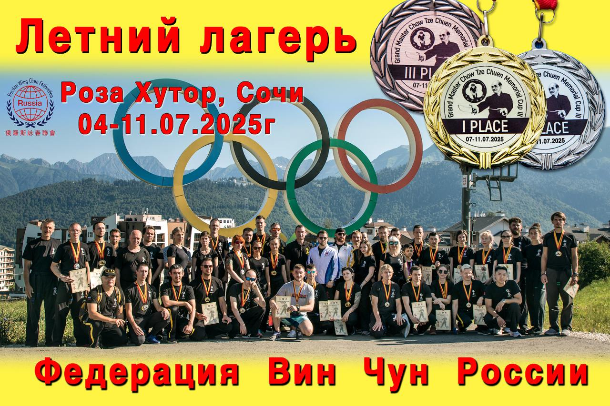

Большой тренировочный летний лагерь Федерации Вин Чун России и IWCO под руководством СиФу Анатолия Белощина и ведущих инструкторов ФВЧР и IWCO!
Внимание для всех членов Федерации Вин Чун России и просто тех, кто хочет поднять свой уровень мастерства в Вин Чун, набраться здоровья на весь год и хорошо отдохнуть в красивейшем месте России!!!В этом году в тренировочных сборах могут принять участие как взрослые так и дети от 6-ти лет в сопровождении родителей!!! С 4 по 11 июля 2025 года будет проходить Большой Тренировочный лагерь IWCO под руководством СиФу Анатолия Белощина и ведущих инструкторов ФВЧР и IWCO, а также Всероссийские соревнования «Кубок памяти Чоу Дзе Чуена» В программе семинары и мастер классы СиФу Анатолия Белощина для инструкторов и студентов IWCO и Федерации Вин Чун России. Большой тренировочный лагерь в Олимпийской деревне Роза Хутор (г. Сочи, Красная поляна). Долина «Роза Плато» расположена на круглогодичном курорте «Роза Хутор» на высоте 1170 метров над уровнем моря, где совсем недавно располагалась Горная Олимпийская Деревня - один из знаковых объектов Зимних Олимпийских игр 2014 года в Сочи. Здесь жили и готовились к выступлениям спортсмены стран участников Игр. И сейчас Вы повсеместно можете видеть флаги стран-участниц Олимпиады. Деревня занимает площадь 32 гектара в живописном месте с прекрасными панорамными видами на горы Аибга и Псехако. Большой тренировочный лагерь в Олимпийской деревне в Сочи, это уникальная возможность, потренироваться, посетить несколько семинаров СиФу Анатолия Белощина и ведущих инструкторов Федерации, набраться сил и здоровья в уникальном природном заповеднике, посмотреть Олимпийские объекты, отдохнуть на море и в горах всей семьей и все это в одном месте! Для участия необходимо в указанный срок заполнить заявку на участие. Заявку заполняет инструктор/руководитель группы, на всех своих участников. Если вы один, заполняете индивидуальную заявку! По всем вопросам обращаться к своему инструктору или в телеграмм +79500079338 @IWCOSPB Динаев Осман Русланович Сборы проводят: СиФу Белощин Анатолий Анатольевич Инструктор IWCO Павлов-Русинов Александр Михайлович Инструктор IWCO Шевченко Дмитрий Викторович Инструктор IWCO Динаев Осман Русланович